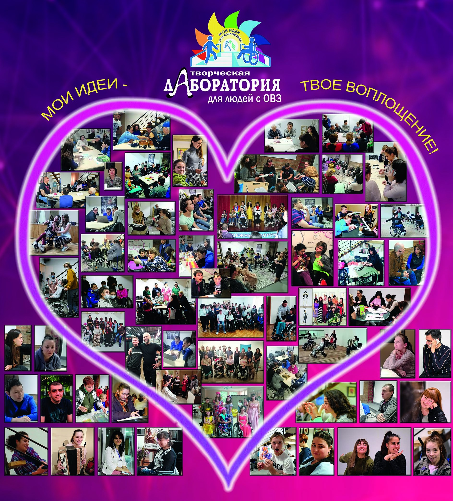

Идея создания проекта принадлежит Провоторовой Анастасии, человеку с проблемами со здоровьем, который сам не понаслышке знает, что такое закрытое пространство.

В 2018 г. проект был создан и с тех пор активно и регулярно работает. Он основан на идее создания сообщества, в котором люди с инвалидностью, в том числе с тяжелым поражением опорно-двигательного аппарата, могли бы раскрывать свои творческие и интеллектуальные возможности с помощью педагогов и волонтеров.
Цели проекта:
- сделать творческую, культурно-досуговую деятельность доступной для людей с ОВЗ, укрепить уверенность в себе, помочь побороть страхи перед публичными выступлениями, преодолеть психологические барьеры;
- дать возможность почувствовать себя равными, нужными и полезными в современном обществе;
- объединить людей с ОВЗ;
- расширить общение людей с ОВЗ - вывести его за рамки «бытового», «семейного» на новый творческий уровень - по-интересам, увлечениям;
- изменить общественное мнение о людях с ОВЗ - донести информацию о их возможностях, талантах - как о творческих личностях, способных к самореализации, профессионально состоявшихся;
- привлечь специалистов и институты разного уровня к обучению педагогов, готовых на эмоциональном уровне взять на себя ответственность работать с людьми с ОВЗ;
- научить общество сосуществовать с такими людьми на равных.
На базе лаборатории регулярно проводят обучение профессиональные педагоги по следующим направлениям:
- компьютерная графика и программирование с возможностью дальнейшего трудоустройства;
- основы рисунка, живописи;
- вокал;
- игра на гармошке, синтезаторе, гитаре;
- шахматы;
- осетинские и современные танцы;
- занятия с психологом;
- театральная студия.
Занятия проводятся с помощью волонтеров, которые оказывают помощь участникам лаборатории в раскрытии их способностей и талантов в интеллектуальной и творческой сфере.
Благодаря возможности общения среди равных, у наших ребят появляется уверенность в себе, исчезает страх перед обществом, возникает желание жить полноценной жизнью и добиваться своих целей, несмотря на заболевание.
Руководитель проекта - Провоторова Н.М.